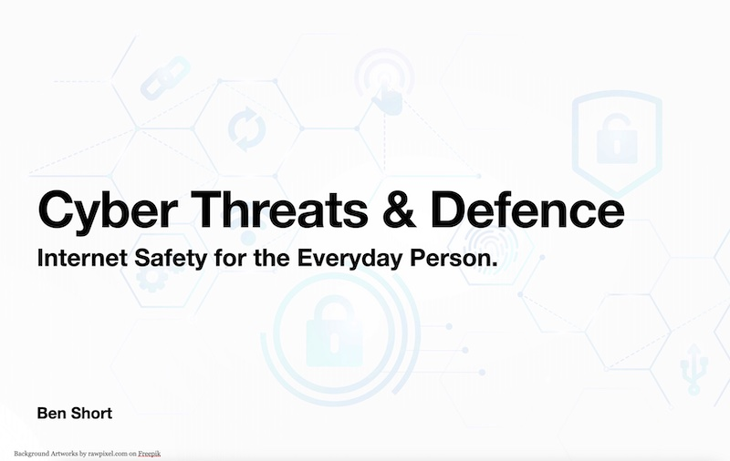

Hi All.
Chances are that you have arrived at this page as a result of hearing me speak about cyber safety online. This is the resources page.
It's nothing fancy, but it's easy to maintain. Below you will find stuff related to presentations and extra resources.
Click the slide below to download my "Standard Presentation Deck"
The bookmarks below are hosted on raindrop.io - a social bookmark manager.
I recommend you clock the "More" link in the top right of the frame below to open the full page, which shows links by category too.
Sometimes there are just other cool links that I want to place outside of the bookmarks. Here they are.